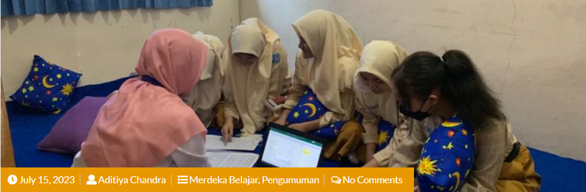
Pengumuman Pemetaan Kelas XI Tahun Pelajaran 2023-2024
Pengumuman Pemetaan Kelas XI Menindaklanjuti hasil dari...
Read More »Puji syukur kita panjatkan ke hadirat Tuhan Yang Maha Esa, karena atas limpahan rahmat-Nya website resmi SMA Negeri 15 Surabaya dapat terus dikembangkan. Website ini bertujuan sebagai sarana informasi dan komunikasi bagi siswa, guru, orang tua, serta masyarakat luas.
Informasi Tentang Merdeka Belajar SMA Negeri 15 Surabaya

Pengumuman Pemetaan Kelas XI Menindaklanjuti hasil dari...
Read More »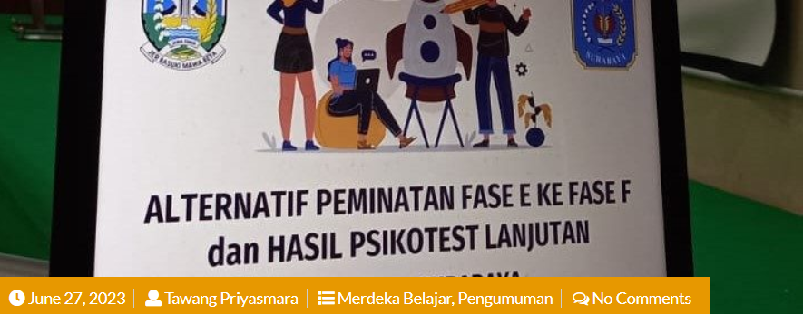
Pengumuman Pemetaan Peserta...
Read More »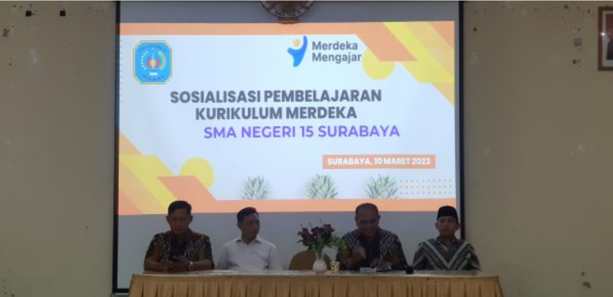
Melanjutkan sebelumnya sosialaisasi yang diadakan pada tahun 30 Juli 2022 lalu...
Read More »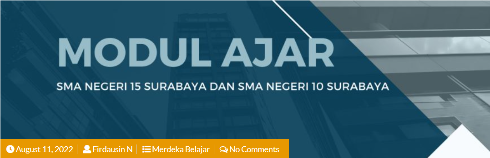
Modul Ajar dibawah ini merupakan modul ajar kolaborasi antara SMA Negeri 15 Surabaya...
Read More »Informasi Tentang Kegiatan Projek Penguatan Profil Pelajar Pancasila (P5)
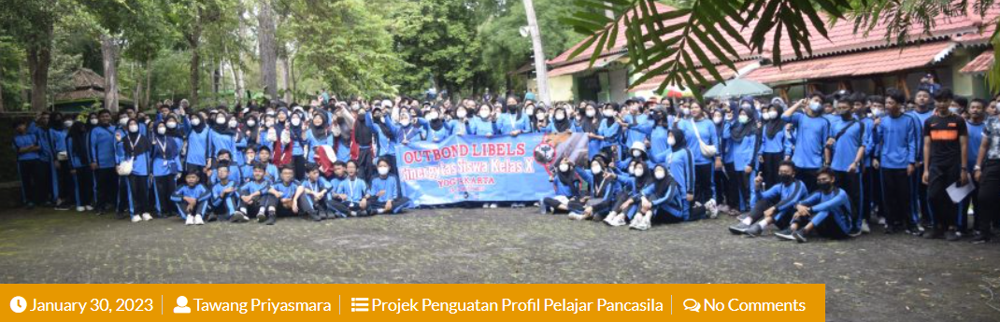
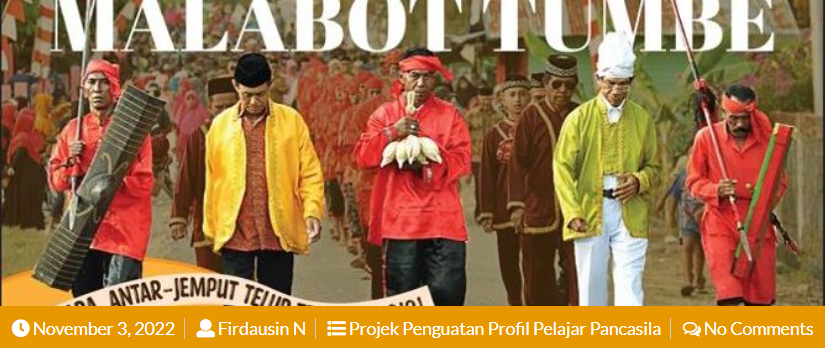
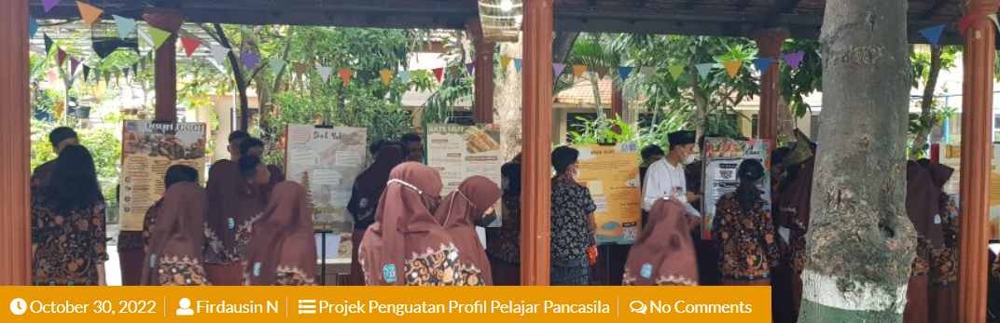
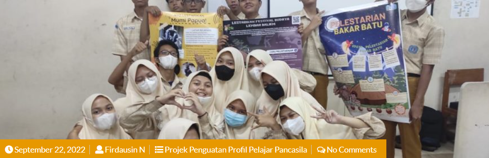
Pengumuman Terbaru SMA Negeri 15 Surabaya
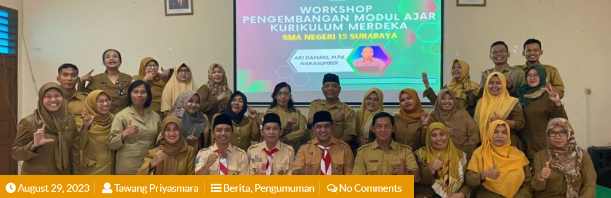
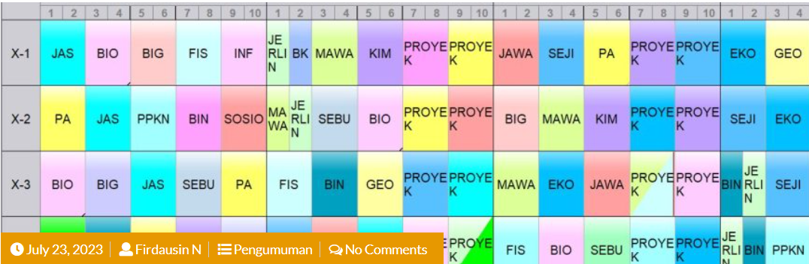
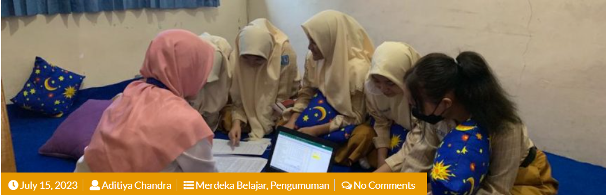
Prestasi Siswa SMA Negeri 15 Surabaya
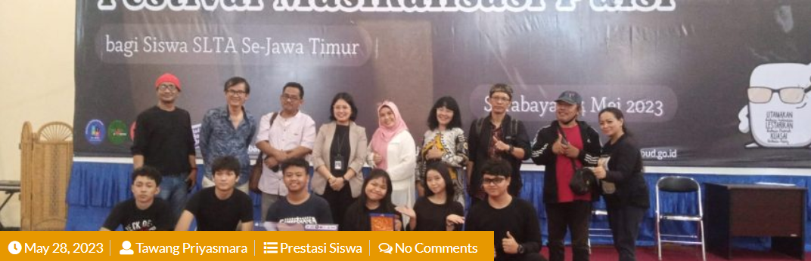
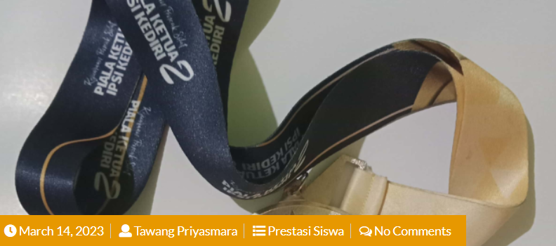
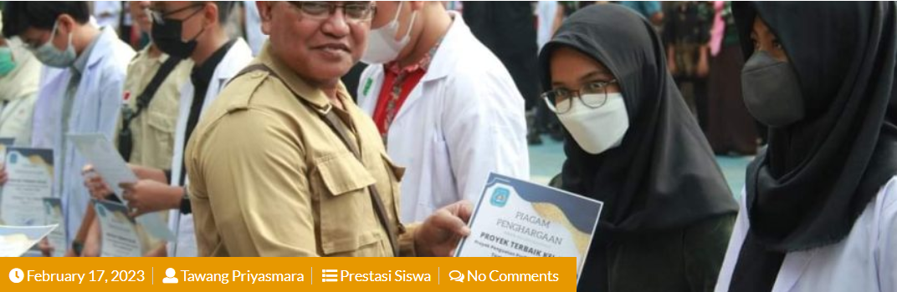
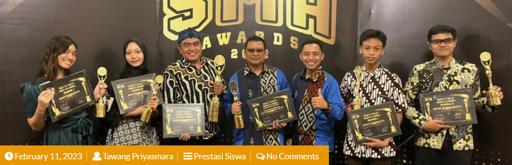